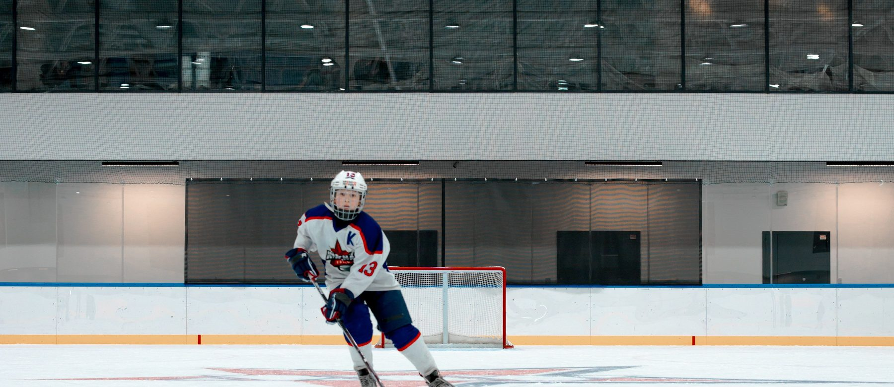

China's ice hockey landscape in numbers and in sequence

Still developing — but showing significant growth in recent years
According to the International Ice Hockey Federation (IIHF), China has a total of 10,786 registered players. This includes 8,043 youth players — the most in Asia — and 1,221 senior male players. In contrast, hockey powerhouses like Canada and America have over 630,000 and 586,000 players respectively. Growth is nonetheless evident: Beijing's registered players grew from just over 300 in 2012 to 4,169 by March 2024.
China leads Asia with 104 indoor rinks of IIHF size. The number of ice rinks has surged from about 50 in 2015 to over 400 nationwide. The Beijing 2022 Winter Olympics also spurred the creation of world-class facilities.
China's total pool is roughly 1.7% of Canada's. The bar is deliberately drawn to scale.
Scroll to light up the timeline
Ice hockey was already being played in China as early as 1935.
The Chinese Ice Hockey Association joined the International Ice Hockey Federation.
The men's team achieved a historic promotion to Pool B at the World Championship, on home ice in Beijing.
China won the Asian Winter Games twice, defeating Japan on both occasions. The 1980s are considered a golden era.
Asian Winter Games titles in 1996 and 1999, and a fourth-place finish at the 1998 Nagano Olympics.
A sharp fall. The men's world ranking plummeted from 20th in 1994, and the women's team also fell from grace. By 2015 there were fewer than 2,000 registered youth players.
The turning point. The award catalysed a massive revival, and the "300 million people on ice" national strategy was launched.
The KHL's Kunlun Red Star played in China, hosting 119 games and popularising the sport.
China established the Chinese Men's Ice Hockey Professional League and the Women's Professional League, providing crucial platforms for local talent.
Five national teams have won 7 gold, 2 silver and 1 bronze at World Championships and World Junior Championships. The men's world ranking rose from 32nd to 25th, the women's from 20th to 12th.
An 18-year-old Beijing native was selected 33rd overall by the San Jose Sharks in the NHL Draft — the highest selection for a Chinese player in NHL history.
The KHL returned to China with the Shanghai Dragons.
The Chinese Ice Hockey Association's five-point plan
China's ice hockey future looks promising, driven by strong government support and international ambition. A series of policy reforms has led to significant competitive breakthroughs, and a young, talented squad is emerging.
Recruiting talented overseas Chinese players.
Strengthening the domestic league system.
Building a robust youth training system.
Increasing global engagement.
Enhancing team management and ideology.
The next three pages examine why growth at the base has not yet closed the gap at sixteen.